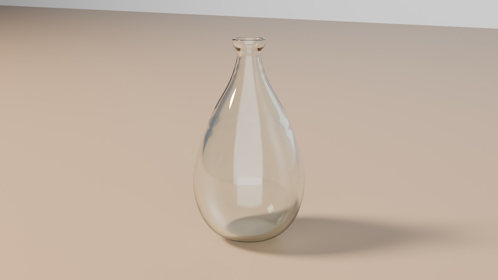
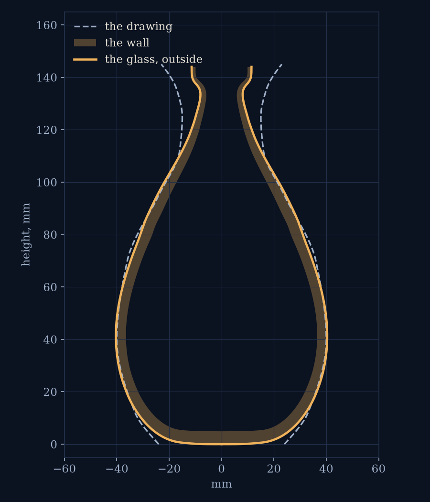
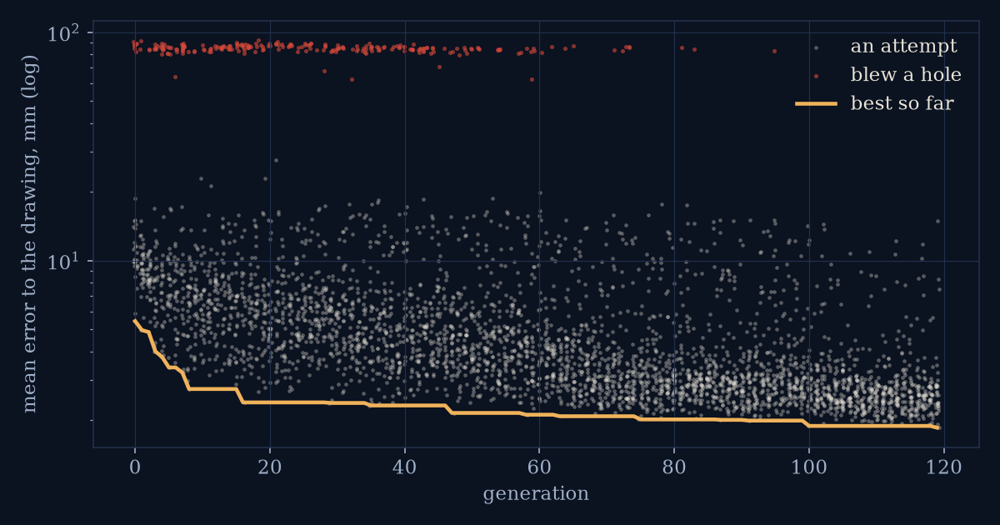
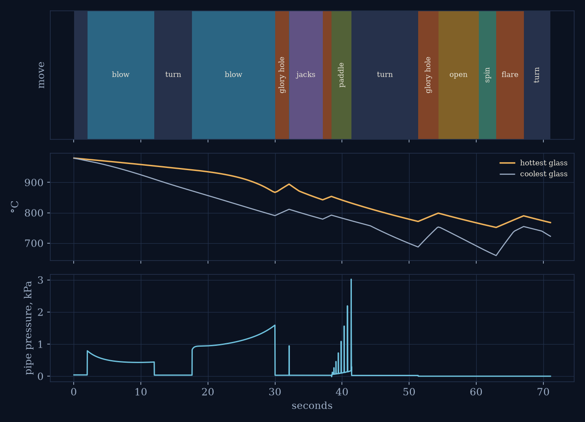

Blown
A vase blown by a program that had to learn how. The glass is a simulation I wrote today: a thin sheet of very viscous liquid on the end of a blowpipe, with the viscosity of soda-lime glass across the working range, radiating its heat away as it works, pushed by a measured breath and shaped by jacks, a paddle and a spin. Nobody wrote the blower's plan. An evolution strategy proposed plans, each one was blown in the simulation, and the ones that came out closest to a drawing bred the next generation. The film is the winning attempt in real time, in the hot shop, then the cooling and the cold vessel against the drawing.
watch on YouTube · the Short: the whole making at double speed
The vessel against the drawing


What the glass is
- The sheet. The glass is an axisymmetric thin viscous sheet: a profile of about a hundred nodes from the lip to the pole, each with a wall thickness and a temperature. Each step solves a quasi-static viscous flow (Rayleigh dissipation in plane stress, so the sheet stretches, thins and sags with the right ratios) under gravity, the cavity pressure and the tools, with a viscous bending term along the meridian so the pole cannot run away, then advances the nodes, thins the wall by conservation of volume and remeshes. Viscosity follows the Vogel-Fulcher-Tammann curve for soda-lime glass: about 103 Pa·s at 1000 °C, 107.6 at the softening point near 725 °C, and capped at 109 below 624 °C, where real glass goes on stiffening to a solid.
- The heat. Every node radiates from both faces to its surroundings and loses heat by convection, and heat conducts along the wall. The surroundings are the shop at 25 °C or the glory hole at 1100 °C. A thin belly cools faster than a thick base, which is most of why the plan is what it is.
- The breath. The blower sets a flow of air into the pipe, not a pressure. The pressure is whatever that flow takes, solved each step against the sheet's resistance, and clamped to what lungs can do. Blowing into a stiff, cold parison raises the pressure; blowing into a hot thin one hardly does. When the wall thins past a limit the piece is blown through, and that attempt is scored as a failure with a penalty for how early it happened.
- The tools. Jacks pinch a neck at a chosen height and radius; the paddle is a plane that the base cannot cross; the crack-off cuts the profile at the pipe and the punty holds the base; opening the lip is a prescribed radial velocity at the free edge; a spin adds a centrifugal load. Each is a constraint on the sheet's velocity, nothing more.
What it was aiming at
A drawing: nine points and a smooth curve through them. A belly 80 mm wide, a waist, a lip that comes back out, 145 mm tall. The loss is the mean radial distance between the outer wall of the finished glass and the drawing, sampled by height, plus a penalty if the thinnest wall goes under 1.2 mm. That is all the search ever sees; it never sees the process.
How it learned
CMA-ES, an evolution strategy, over the 22 numbers of a plan: the size of the gather, three breaths as volumes, how long to let the piece hang and at what angle between them, when to go back to the glory hole and for how long, where the jacks pinch and how tight, how far the paddle pushes, how wide to open the lip and how hard to spin. Thirty-two plans per generation, each blown in the simulation in parallel on 28 cores, and the best half of each generation shapes the next. It ran for 120 generations in forty minutes on one CPU.


The film
The drawing, the rules, then the search as a montage of attempts, one generation per beat. Then the winning plan in real time, 71 seconds, in Cycles: the glass is a surface of revolution rebuilt from the solver's profile at every frame with its wall thickness and temperature as attributes, and it glows as a blackbody at its own temperature, brighter where it is thick, dimmer as it cools, invisible below about 620 °C. The glory hole is an open emissive tube the piece goes into and comes back out of. Then the cooling, 120 seconds at fifteen times life, and the cold vessel on a table against the drawing. The sound is synthesised from the same plan: the furnace roar gated by the glory hole, breath on the blow moves, the pipe rolling, the scrape of the jacks, the paddle, the crack-off.
Honesty ledger
- The lip is wrong. The winning vase keeps the narrow neck the jacks made and the lip stands straight up instead of flaring. Opening the lip is a radial velocity on the last few nodes with nothing to open it against. Plans that opened it wider got the lip closer to the drawing and the rest of the vase further away, by more, so the search learned to barely open it: 4.5 mm in the winner. I have not yet worked out where that cost comes from. A real blower opens a lip with the jacks inside it. The narration says so.
- The wall has one temperature through its thickness. Real glass has a cold skin over a hot core, and a thick gather keeps working long after its surface dulls; this glass does not, so every timing in the plan is a timing for a glass that is a little too honest about its temperature.
- The solver caps viscosity at 109 Pa s, which the curve reaches at 624 °C, to keep the linear solve well conditioned when a rim goes cold. Below that the model glass is no stiffer than at 624 °C, so a rim that should be rigid is only very stiff.
- The bending term acts along the meridian only. Axisymmetry hides anything that would wrinkle around the hoop, and it also means nothing can ever go off centre, which is most of what goes wrong at a real bench.
- The air inside is not modelled. The breath is a volume flow; the cavity air does not heat, expand or cool the wall from inside.
- The search sees only the final shape. It does not care how long the piece spent in the glory hole or how many moves it took, and it found plans a person would not: the third breath in the winning plan is ten milliseconds long, which is to say skipped, and the gather's wall sits at the 10 mm top of its allowed range.
- The thinnest wall in the finished vase is 1.5 mm, at the belly. That is a real, if delicate, vase.
How it was made
Python and NumPy for the solver (a banded quasi-static solve per step, remeshing by arc length, a blown-through guard), the cma package for the search across a process pool, Blender 5.2 headless with Cycles on the GPU for the shop (a fixed-topology revolved mesh updated per frame with point attributes for temperature and thickness), cairo for the film's drawings and text, ffmpeg for the assembly, numpy and scipy for the sound, Kokoro for the voice. All in one day, 120 generations of search and about three and a half hours of rendering as scheduled tasks.
Code: the repo, folder day64.